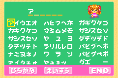

Fruits Mura no Doubutsu-tachi (Japan)
Stateless / Passcode gbakit Built-In 🎮 Button Cheat 🎮 4P Link
Cartridge Identity
- Game Code
BFDJ(FamilyBFD)- Header Title
FRUITMURA- Maker / Revision
1Q/ rev0- ROM Size
- 8.0 MiB (8,388,608 B)
- Save Media
None / Unknown- SHA-256
49fe94ecc6e0f4a494f570f2a1906b88611321035b9a7405323015823785d456- Engine / SDK Group
comm-007(56 families)
Screenshots

Verified Button-Combo Cheat
Zero-patch retail controller cheat (Wave 3): 4-way counterfactually verified in headless
libmgba. See all verified titles in the Button-Combo Cheats Catalog.
- Effect
- Hidden Controller Sequence Unlock (ROM table 0x0829dd90)
- Button Sequence
A, SELECT, RIGHT, UP, B, SELECT, START, LEFT, B, SELECT, START, LEFT- Verification Verdict
- Visual + RAM Unique Reaction
- Target RAM Address
0x0300101D- ROM Table Address
0x0829dd90- Timing Protocol
boot=360f,hold=6f,release=6f,settle=60f- Activation Indicator
- Headless libmgba 4-way counterfactual verified: unique 240x160 framebuffer and RAM/VRAM state transition distinct from control, wrong, and reversed inputs
gbakit cheat verify BFDJ
Link Cable & Multiplayer Communications
This title contains detected communication capabilities: 🎮 4P Link.
Detailed protocol specifications, SIO registers, Joybus commands, and MultiBoot sequences are documented in the Link & Multiplayer Reference.
- Multi-Player SIO (4P)
- 16-bit ring network · SIOCNT (
0x04000128) literals:0x0133dc,0x0209a4,0x020a20· SIODATA32/SIOMULTI0 (0x04000120) literals:0x020c60
Battery Save Support in gbakit
Built-in definition (BFDJ)
gbakit save verify BFDJ save.sav
gbakit save decode BFDJ save.sav
gbakit save fix BFDJ damaged.sav -o repaired.savROM Assets, Compression & Audio
- BIOS Compression
- LZ77 (
0x10): 0 streams · RLE (0x30): 0 streams - ROM Pointer Tables
- 362 tables (0 pointing to validated compressed streams)
- SDK Backup Tags
EEPROM_V124
Text, Fonts & Scene Data
- Primary Text Encoding
- 16-bit / UTF-16LE text (
15ASCII strings ·8Shift-JIS runs) - Font & VWF Indicators
- VWF Width Table 1bpp Font · BIOS SWIs: BitUnPack
0x10:2· LZ770x11/12:40· Huffman0x13:3· RLE0x14/15:0 - Scene & Packaging
113ROM pointer tables (≥32 entries,14≥200) ·3relativeu32TOCs ·253OAM metasprite hits
Hardware MMIO Subsystems
ppu_display0x80020b4,0x80020fc
Regional Variants & Revisions (Family BFD)
- Fruits Mura no Doubutsu-tachi (Japan) (Rev 1) (
BFDJ, 8 MiB) - Fruits Mura no Doubutsu-tachi (Japan) (Rev 2) (
BFDJ, 8 MiB)